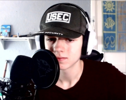

Wie ben ik?
Ik ben Lucas de Kleijn, Software Developer BOL4 op het Davincicollege. Ik schrijf op het moment HTML, Javascript, PHP, CSS, Python en C#.
Ik heb deze opleiding gekozen omdat ik het vak "Informatica" heb gehad op mijn middelbare school, het Develsteincollege. Het vak informatica ging ook over het schrijven van software, hier heb ik dus alle talen het meest geleerd.
Motivatie om code te schrijven komt uit de opdrachten: "Maak dit met de volgende eisen" is gewoon uit zichzelf leuk voor mij. Dit soort dingen heb ik ook buiten de lessen gedaan voor mezelf, ik zeg tegen mezelf bijvoorbeeld: "Maak een desktop applicatie die de winst berekent als je het volgende doorverkoopt".
Zelf wil ik leren om gehele websites/applicaties te schrijven, zodat ik het leven van mezelf en anderen een stuk makkelijker kan maken. Websites zoals Youtube to MP3 hebben mij enorm geholpen in mijn leven, en ik wil dit soort dingen maken zodat anderen dit gemak ook meemaken.